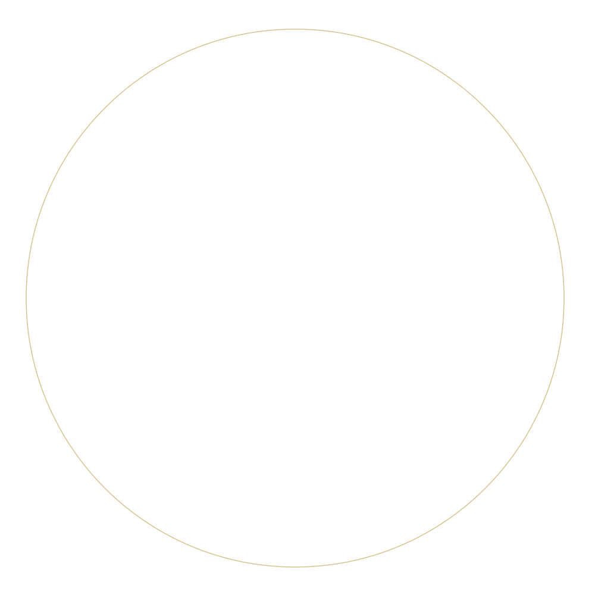
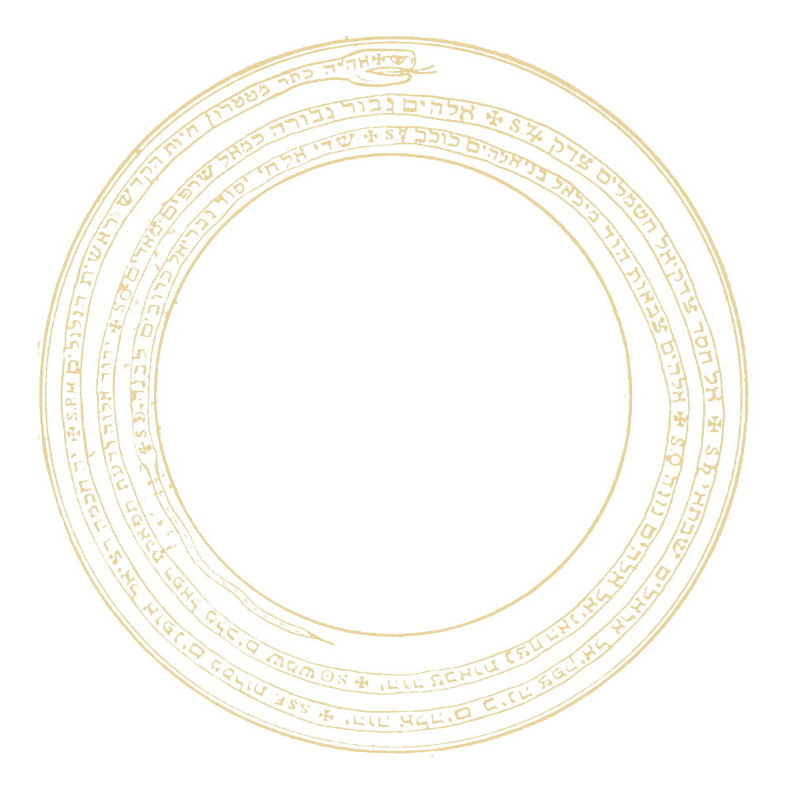
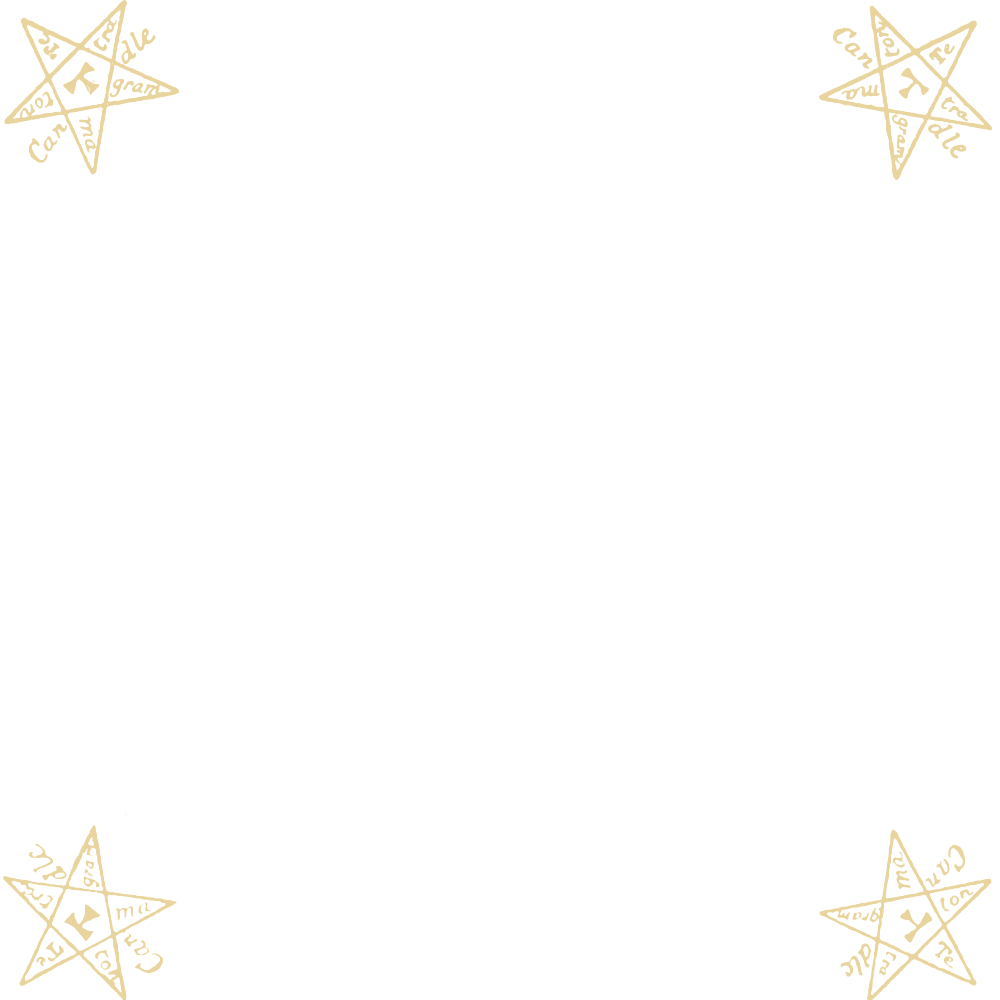
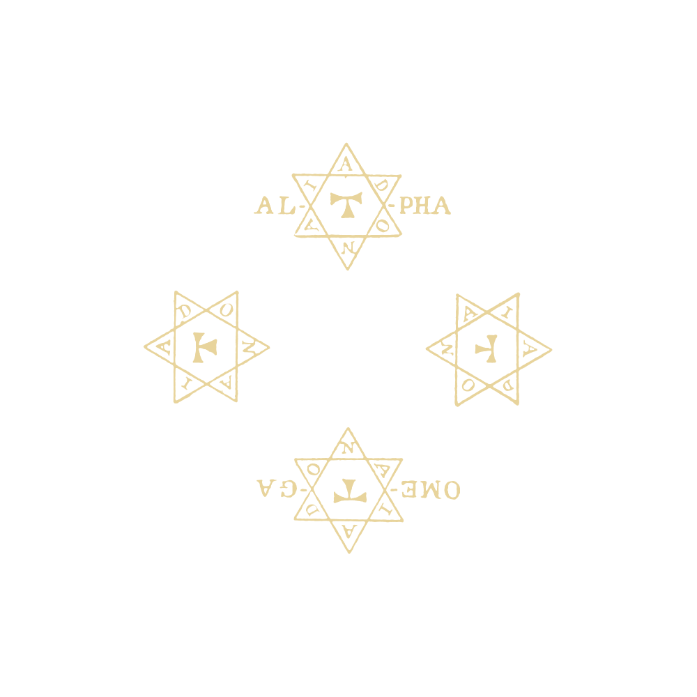
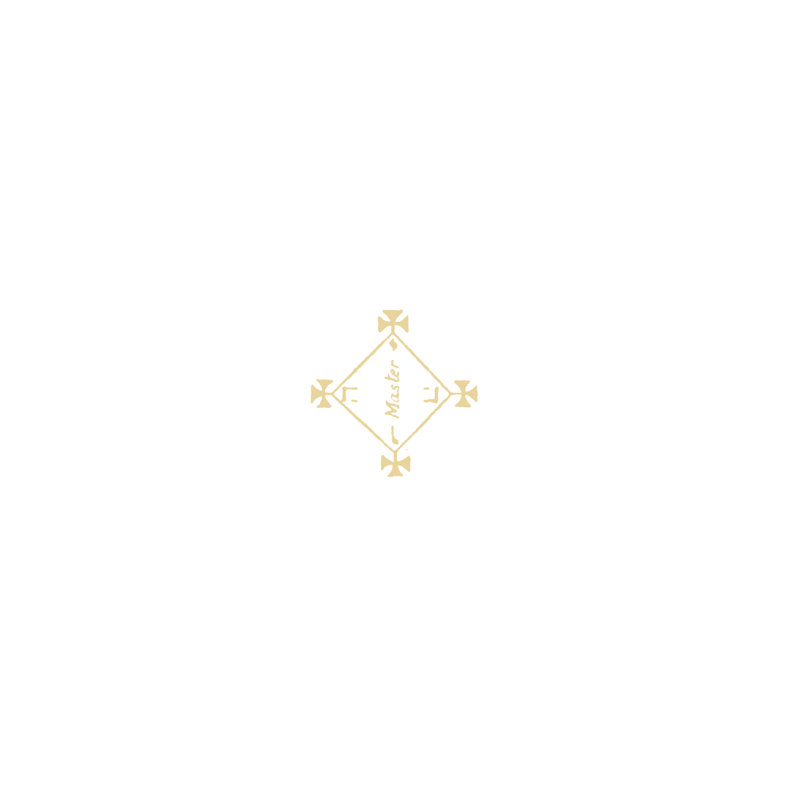

GOETIC CIRCLE · LAYER STUDY
One drawing. Separate reveals.
Each tile shows one isolated layer. Below, toggle the layers to inspect the assembled circle. The mist and sparkles are animated.

Starting outline
Visible before any activation
01 · Snake
Coils and original inscriptions
02 · Exterior stars
Four candle pentagrams
03 · Interior stars
Four hexagrams, Alpha and Omega
04 · Central square
Square, Master inscription and crosses
05 · Golden mist
Final glow and drifting sparklesOVERLAY CHECK
Build it back up.
Every file uses the same 1000 × 1000 canvas and a transparent background.
Original lettering and figures come from the public-domain Goetia plate. The external triangle, direction labels and figure caption are omitted from these isolated elements. Gold color and the final mist effect are display adaptations. This study previews the assets; the live NFC activation mapping is unchanged.